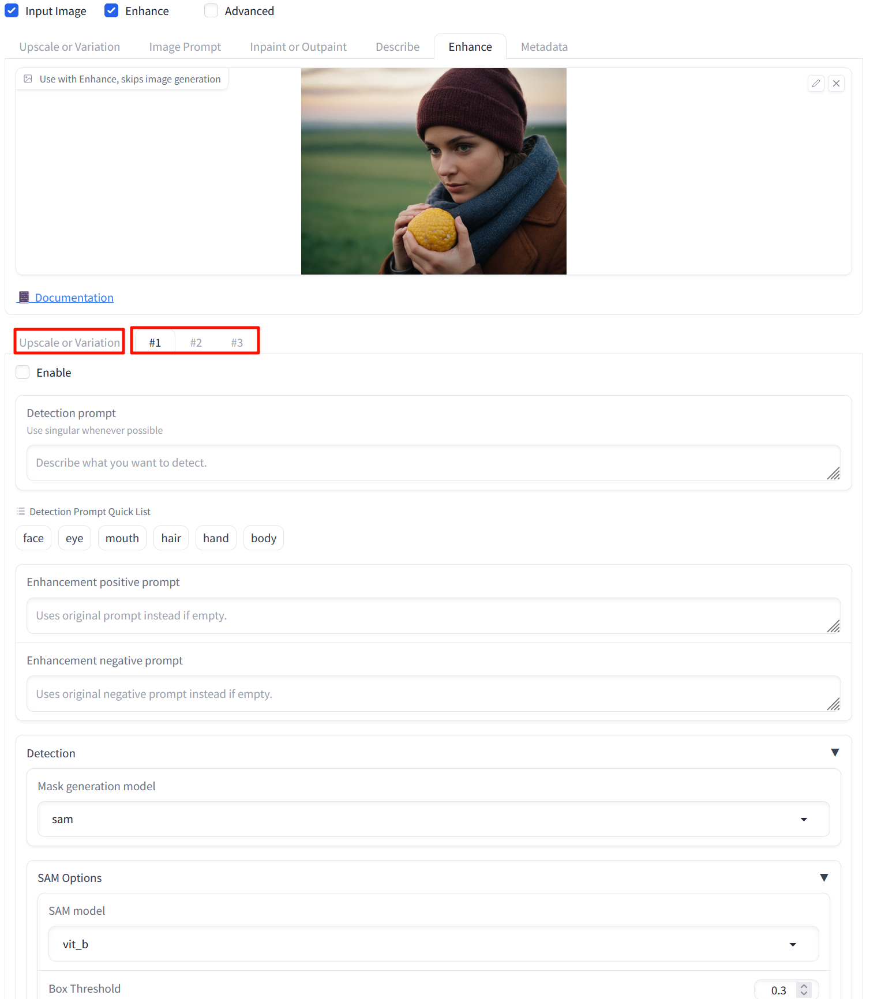

This is a feature added in version 2.5, with more complex and numerous parameters. However, like ImagePrompt, the logic remains the same. Let's demonstrate with the WebUI:

By checking Enhance and switching to the Enhance tab, there are four additional tabs, with Upscale or Variation used for pre- or post-processing of the image. #1, #2, #3 indicate multiple treatments. Logically, it first generates a mask and then redoes the drawing based on the description words. You can consider this as a combination of Upscale or Variation, Inpaint, and Generate Mask.
By default, the program returns images for each stage, For example, if you want to process an image as follows: Vary (Strong) -> Enhance face -> Enhance mouse -> Enhance eye, you will get three result images. Use save_final_enhanced_image_only to get the final result.